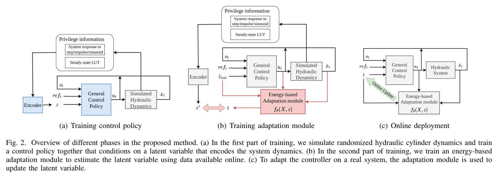
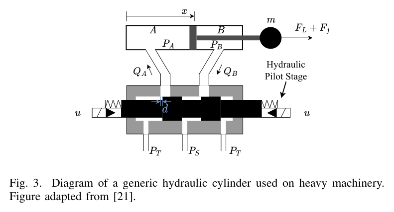
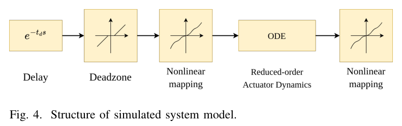
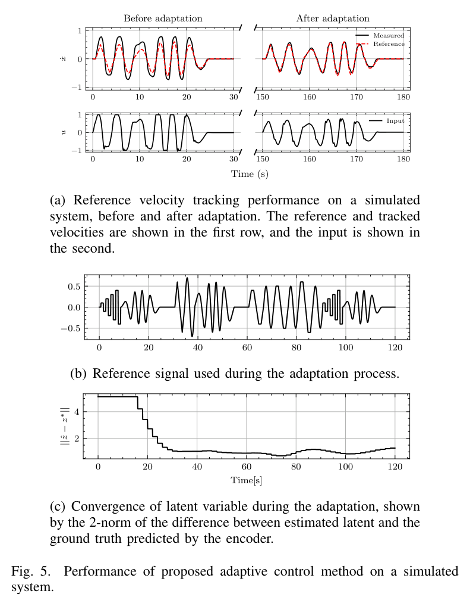
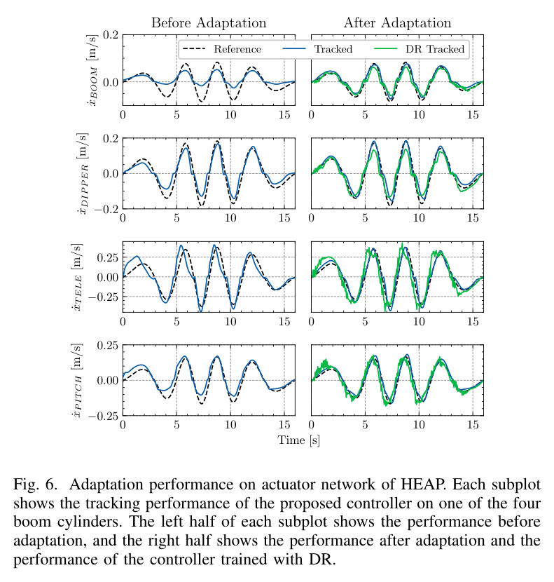
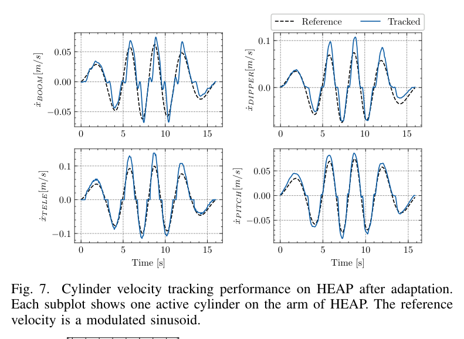
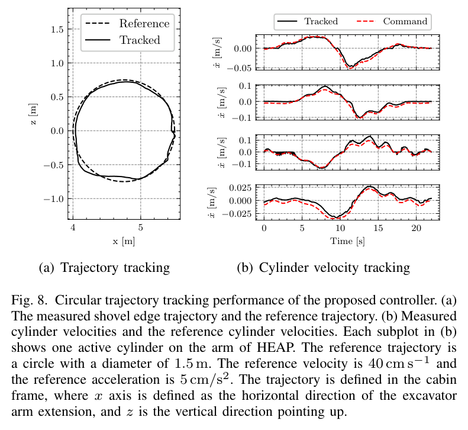
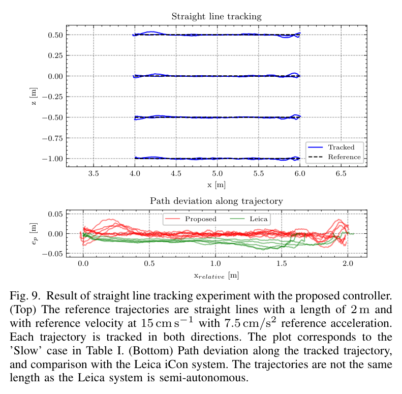
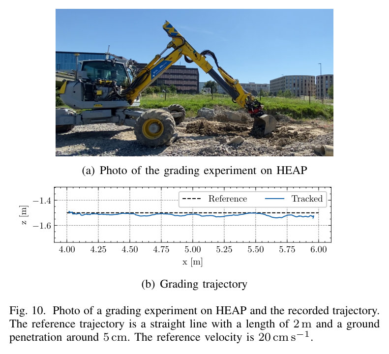
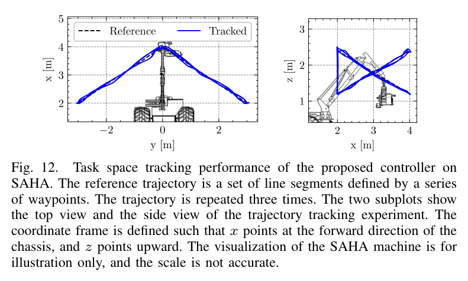

범용성의 핵심은
차이를 무시하지 않는 데 있다
유압 실린더의 제어를 어렵게 만드는 것은 기계마다 다른 응답이다. 같은 명령도 지연, 밸브 데드존, 마찰, 노화에 따라 다른 움직임을 만든다.
수동 피드포워드 표와 PID를 조합하거나 기체 전용 데이터로 액추에이터 모델을 학습하면 좋은 제어기를 만들 수 있다. 하지만 기체가 바뀌면 조정과 데이터 수집의 부담이 돌아온다. 이 논문은 공통 정책을 먼저 학습하고, 현장에서는 기계의 특성을 나타내는 작은 벡터를 맞추는 방식으로 문제를 나눈다.
-
01
실측 학습 데이터를 줄여도, 현장 관측은 필요하다
정책은 무작위화한 물리 시뮬레이션에서 학습한다. 실차에 배치한 뒤에는 실제 입출력 관측으로 적응한다. 무작위화 범위에는 HEAP에 대한 경험도 반영되어 있다.
-
02
기계의 차이를 z로 알려주면 추종 성능이 좋아진다
잠재변수로 동역학 정보를 받는 정책은 도메인 무작위화만 적용한 정책보다 낮은 RMS 속도 오차를 보였다. 이 비교는 적응을 통한 시스템 정보가 제어에 도움이 된다는 근거다.
-
03
정밀 운동의 성공과 굴착의 성공은 구분해야 한다
두 실기에서 운동 제어를 검증했지만, 급변하는 접촉 부하까지 해결한 것은 아니다. HEAP의 평균 직선 편차는 작았으나 최대 편차는 비교 대상인 전작보다 컸다.
정책은 공유하고,
시스템의 표현을 적응시킨다
전체 흐름은 세 단계다. 먼저 시뮬레이터에서만 쉽게 얻을 수 있는 풍부한 응답 정보를 z로 압축하며 정책을 학습한다. 다음으로 일상적인 입출력 관측만으로 적절한 z를 찾는 적응 모듈을 학습한다. 실차에서는 이 모듈이 z를 갱신한다.

-
STEP 01 · SIMULATION
많은 기계를 만든다
축소 모델의 지연, 데드존, 비선형 맵과 동역학 파라미터를 무작위화해 다양한 시스템을 생성한다.
-
STEP 02 · REPRESENTATION
차이를 16차원에 담는다
정상 응답과 스텝·사인 과도 응답을 z로 압축한다. 정책은 z에 조건화되어 목표 속도를 추종한다.
-
STEP 03 · REAL MACHINE
관측에 맞는 z를 찾는다
실차 입출력에 대한 에너지를 낮추도록 z를 갱신한다. 같은 정책을 실린더별 특성에 맞춰 사용한다.
하나의 정책이 여러 기계를 다루려면,
지금 어떤 기계를 제어하는지 알아야 한다.
이때 z는 지연이나 마찰 계수를 하나씩 명시한 물리 파라미터 표가 아니다. 제어에 유용한 동역학 정보를 압축한 학습된 표현이다. 따라서 적응의 목표도 모든 물리량을 정확히 복원하는 것보다, 관측과 맞고 정책에 유용한 표현을 찾는 데 있다.
복잡한 유압계를
어디까지 단순화할 수 있을까
모델은 파일럿단 전류 u가 주 스풀 개도 d를 만들고, 밸브를 통과한 유량이 압력을 바꾸며 피스톤을 움직이는 구조에서 출발한다. 중요한 선택은 세부 현상을 모두 재현하는 대신, 속도 제어에 필요한 응답을 남기는 것이다.

QL: 부하 유량 · PS, PT: 공급·탱크 압력 · PL: 부하 압력 · x: 피스톤 위치 · d: 스풀 개도.
로드센싱이 제곱근 항을 일정하게 유지한다고 가정하면, 개도에서 속도로 이어지는 관계는 2차 시스템으로 축소된다. 아래 식은 위치 x에 대해 3차 미분이지만, 제어 대상인 속도 ẋ에 대해서는 2차다.
| 기호 | 의미와 가정 |
|---|---|
| E, Vt | 오일 체적탄성계수와 실린더 총 체적. |
| Ā | 평균 유효 피스톤 면적. |
| m | 피스톤에 투영한 등가 질량. 자세에 따른 고유진동수 변동이 30% 미만이라는 근거로 상수 취급한다. |
| FL | 중력 등을 포함한 외력. 시간에 따라 느리게 변한다고 가정한다. |
| Ff | 마찰. −μẋ − Fs sign(ẋ) 형태로 표현한다. |
| K′ | 로드센싱 조건에서의 유효 밸브 이득. |

빠른 파일럿단은 지연과 데드존으로 대체한다. 밸브 비선형은 기울기가 양수인 구간선형 맵으로 동역학 앞뒤에 배치한다. 무작위화는 최대 0.6초의 지연, 최대 25%의 데드존, 맵 기울기, 선형계 파라미터와 마찰을 포함한다.
해석상의 주의: 범위 설정에는 HEAP 경험이 사용됐다. 따라서 “기체별 실측 데이터로 정책을 학습하지 않았다”와 “유압 기계에 대한 사전 지식이 전혀 필요 없다”는 서로 다른 주장이다.
제어는 정책이,
기계에 대한 추정은 에너지가 맡는다
목표 속도의 미래와 시스템의 과거를 함께 본다
정책은 최근 관측·명령 이력, 목표 속도 미리보기, z를 받는다. 목표의 다음 변화를 알고 시스템의 지연을 추정할 수 있으면, 오차가 생긴 뒤 반응하는 것에 더해 필요한 입력을 앞서 준비할 수 있다.
- 정책
- MLP [64, 32]. 관측 ot = [ẋt, ut−1, …, ut−k], 목표 속도 [ẋ*t, …, ẋ*t+N], 16차원 z를 입력받는다.
- 인코더
- CNN + MLP [96, 64]. −1.0부터 1.0까지 0.1 간격의 상수 입력에 대한 정상 응답과 스텝·사인 과도 응답을 압축한다. 학습 중 각 환경의 z는 한 번 계산한다.
- 정책 학습
- PPO + GAE, 병렬 시뮬레이션. 노트에 보고된 학습 시간은 약 0.5시간이다.
세 항은 각각 속도 추종, 목표와 일치하는 속도 변화, 부드러운 제어 입력을 유도한다.
실차에서 특권 정보를 대신하는 에너지 함수
시뮬레이션에서는 정상·과도 응답을 체계적으로 얻기 쉽다. 실차에서는 이런 특권 정보를 매번 확보하기 어렵다. 에너지 함수 fθ(ot, ut, ẋt+1, z)는 현재 관측과 다음 응답에 잘 맞는 z에서 값이 낮아지도록 학습된다.
학습에는 무작위 환경 3,000개, 환경별 기준 z*, 200스텝 롤아웃을 사용한다. 임의의 z에서 경사하강을 5회 수행한 뒤, 도달한 z와 기준 z* 사이의 거리로 에너지 모델을 갱신한다. 이 과정을 2,400회 반복하며, 보고된 학습 시간은 약 3.5시간이다.
실차에서는 최근 관측 구간의 에너지를 줄이는 방향으로 z를 1초마다 갱신한다. ts는 식에서 다음 응답을 참조하는 시간 간격이다.
무엇을, 어디에서,
얼마나 잘했는가
결과는 세 층위로 읽어야 한다. 무작위 시뮬레이션은 적응 작동 여부를, 실측 데이터로 학습된 액추에이터 모델은 더 현실적인 동역학에서의 비교를, 실제 기계는 현장 적용 가능성을 보여준다.
무작위화만으로 남는 오차를 적응으로 줄였다


학습 액추에이터 모델 위에서 적응 제어기는 DR 대비 RMS 오차를 붐 17.5%에서 피치 59.7%까지 줄였다. 논문의 설명은 동역학 정보가 없는 DR 정책이 피드백에 더 의존하면서 지연·오버슈트·진동을 보인다는 것이다. z 조건화는 시스템에 맞는 피드포워드 동작을 만드는 데 도움을 준다.
10분 적응 후, 직선의 평균 편차는 1 cm 안팎
HEAP에서는 10분의 적응 뒤 네 실린더의 속도 추종과 말단 궤적을 평가했다. 변조 사인 신호를 따를 수 있었지만, 속도가 0을 지나는 구간에는 마찰에 따른 급가속이 관찰됐다.



| 지표 | 본 논문 느림 |
본 논문 빠름 |
Egli 2021 느림 |
Egli 2021 빠름 |
Leica 빠름 |
|---|---|---|---|---|---|
| 평균 속도 [cm/s] | 13.0 | 20.0 | 13.1 | 18.3 | 16.3 |
| 평균 경로 편차 [cm] | 0.69 | 1.16 | 0.8 | 0.9 | 1.8 |
| 최대 경로 편차 [cm] | 3.73 | 5.91 | 1.7 | 2.2 | 4.2 |
| 평균 각속도 오차 [rad/s] | 0.004 | 0.007 | 0.010 | 0.012 | 0.015 |
출처: 제공된 논문 요약 노트의 비교표. 각 조건의 실제 평균 속도가 다르므로 동일 속도에서의 통제 비교로 해석하지 않는다.

다른 크기와 상태의 기계로 옮겨도 작동했다
SAHA는 HEAP과 크기·용도·노후 상태가 다른 플랫폼이다. 8분 적응 뒤 웨이포인트 기반 직선 궤적을 세 차례 반복했다. 이 실험은 같은 제어 구조가 다른 기계로 이전될 수 있음을 보여준다.

오차의 배경으로는 노후 유압계, 큰 백래시, 수동으로 현수된 말단 구조가 제시된다. HEAP 직선 실험과는 속도와 기계 조건이 달라 수치만으로 우열을 비교하기 어렵다.
운동 제어의 범용성은
부하 변화 앞에서 경계를 만난다
이 접근의 강점과 한계는 같은 모델 가정에서 나온다. 외력이 느리게 변하고 로드센싱이 잘 동작하면 단순한 속도 모델이 유용하다. 흙을 깊게 파면서 부하가 급변하면 그 전제가 흔들린다.
이번 연구가 보여준 범위
- 서로 다른 두 실기에서의 실린더 속도 제어와 말단 운동.
- 실차 압력 관측 없이 수행한 온라인 잠재변수 적응.
- HEAP의 얕은 접촉 작업과 정밀 경로 추종.
남아 있는 과제
- 깊은 굴착과 급격한 외력 변화에 대한 대응.
- 학습 시 무작위화 범위를 벗어나는 동역학.
- 일상 운전의 편향된 자극만으로 지속적으로 학습하는 문제.
확장 방향은 실린더·펌프 압력을 포함해 부하 의존 동역학을 다루는 것이다. 또 현장 데이터가 충분한 정보를 담는지도 따져야 한다. 반복되는 좁은 운전 조건에서는 관측이 쌓여도 서로 다른 시스템을 구분하기 어려울 수 있다.
압력 없이 가능한 범위를 밝힌 연구는,
압력이 필요한 이유도 함께 보여준다.
현장 설계로 가져갈 것은
정답보다 범위와 시험 절차다
아래는 논문 결과를 HR35에 연결한 노트 작성자의 해석이다. HR35에서 검증된 결과와는 구분한다.
-
트윈의 가정값을 무작위화 범위로 바꾼다
유압 파라미터 장부의
assumed값을 단일 수치로만 남기지 않고 하한·상한과 근거를 기록한다. E, Vt, Ā, 마찰, 데드존, 지연 중 무엇을 실험으로 좁히고 무엇을 적응에 맡길지 판단하는 출발점이 된다. -
식별의 가치를 제어 오차로 평가한다
DR 대비 RMS 오차 감소는 시스템 정보가 제어 성능으로 이어질 수 있다는 근거다. HR35에서도 식별 오차만 보지 않고, 그 정보가 지연·오버슈트·경로 편차를 얼마나 줄이는지 연결해 평가할 수 있다.
-
트렌칭에는 압력 정보와 데이터 기반 모델을 함께 고려한다
HR35 트렌칭은 급격한 접촉 부하를 다뤄야 하므로 이 논문의 압력 없는 모델을 그대로 적용하기 어렵다. 노트의 축 B(압력 기반)와 축 E(데이터 기반)를 결합하려는 방향을 뒷받침하는 설계상의 시사점이다.
-
적응 신호를 현장 시험 계획의 출발점으로 삼는다
스텝·램프·변조 사인, 관절별 개별 시험, 운전자 감독이라는 구성을 축 G의 시험 계획에 참고할 수 있다. 실제 진폭과 속도 범위는 HR35의 운전 조건에 맞춰 정해야 한다.
-
한 번의 응답 시험으로 여러 모델 가설을 비교한다
노트는 이 연구의 2차 모델을 별도로 읽은 “ETH 2026”의 2차·데드타임 MPC 관절 모델과 연결한다. HR35 스텝 응답을 두 모델의 적합성을 비교하는 공통 자료로 활용하자는 제안이다. 해당 2026년 자료의 서지정보는 제공되지 않아, 모델 간 동등성을 확인한 결론으로 다루지는 않는다.
공통으로 배울 것과
현장에서 알아낼 것을 나누자
이 연구의 성과는 “어떤 유압 기계에나 곧바로 붙는 완성형 제어기”보다 구체적이다. 넓은 시뮬레이션에서 공통 제어 능력을 학습하고, 실제 기계의 차이는 작은 잠재변수로 적응시키는 방식이 두 실기에서 작동했다.
다음 설계에서 물어야 할 것은 세 가지다. 기계의 차이를 학습 범위가 담고 있는가. 현장 관측이 그 차이를 드러내는가. 작업 부하가 모델 가정을 유지하는가. 이 질문에 답할 때, 범용 정책은 현장에서 쓸 수 있는 제어기로 가까워진다.
출처와 읽기 메모
- Fang Nan and Marco Hutter. “Learning Adaptive Controller for Hydraulic Machinery Automation.” IEEE Robotics and Automation Letters, 9(4), 2024. DOI: 10.1109/LRA.2024.3372831. 소속: ETH Zürich Robotic Systems Lab.
- 노트에서 읽은 판: ETH Research Collection · 10.3929/ethz-b-000667484. 이 글은 제공된 한국어 요약 노트를 편집·재구성했다. 수식, 수치, 실험 조건은 해당 노트 기준이며 원문을 별도로 대조한 판은 아니다.
- 그림과 표: 제공된 논문 그림 1–10, 12를 원래 번호로 수록했다. 그림 11은 제공 자료에 포함되지 않았다. 캡션은 노트 설명을 바탕으로 재서술했으며, HEAP 비교표는 제공 수치를 유지했다. 그림의 출처는 위 논문이며 이 페이지에서 별도의 재사용 라이선스를 부여하지 않는다.
- 비교 연구: “Egli 2021”은 노트에 제시된 기체 전용 학습 제어기 및 액추에이터 모델을 가리킨다. 완전한 서지정보가 제공되지 않아 추가하지 않았다. RMS 감소율은 학습 액추에이터 모델 위 평가이고, 경로 편차는 실차 평가이므로 두 결과를 같은 지표로 합치지 않았다.
- 해석의 구분: 강조 인용문은 논문 저자의 직접 발언이 아닌 편집 요약이다. HR35 적용과 “ETH 2026” 연결은 노트 작성자의 프로젝트 관점이며, 이 논문이 직접 검증한 주장에 포함되지 않는다.